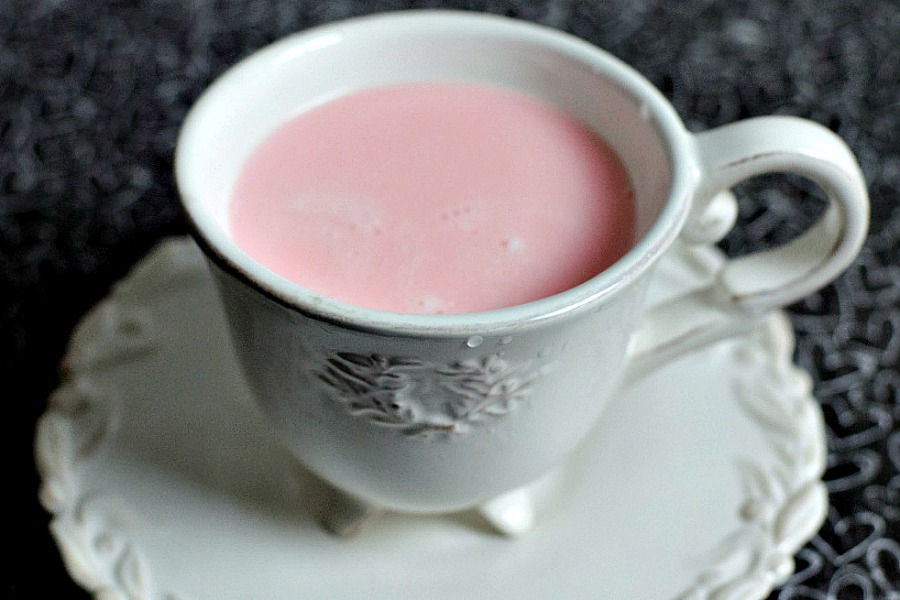

Fairy Milk

A great drink to have before heading to bed.
Ingredients
- 1 cup milk (any kind of milk will work for this recipe)
- A dash of cinnamon sugar
- A drop of red food coloring
Steps
- Pour milk into saucepan and heat until you see small bubbles.
- Turn off the heat and add your cinnamon sugar and red food coloring. Mix until well combined.
- Pour the milk into your favorite cup and enjoy!